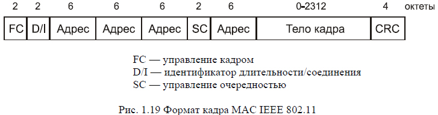
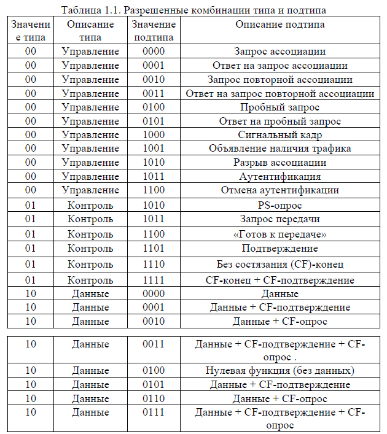
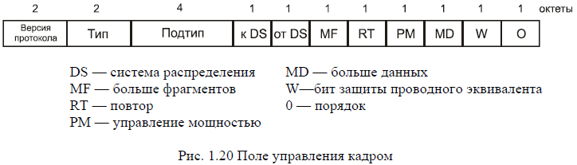

Кадр MAC-подуровня
На рисунке 1.19 изображен формат кадра 802.ll. Приведенная общая структура используется для всех информационных и управляющих кадров, хотя не все поля используются во всех случаях.

Перечислим поля общего кадра:
- Управление кадром. Указывается тип кадра и предоставляется управляющая информация (объясняется ниже).
- Идентификатор длительиосгн/соединения. Если используется поле длительности, указывается время (в микросекундах), на которое требуется выделить канал для успешной передачи кадра MAC. В некоторых кадрах управления в этом поле указывается идентификатор ассоциации, или соединения.
- Адреса. Число и значение полей адреса зависит от контекста. Возможны следующие типы адреса: источника, назначения, передающей станции, принимающей станции.
- Управление очередностью. Содержит 4-битовое подполе номера фрагмента, используемое для фрагментации и повторной сборки, и 12-битовый порядковый номер, используемый для нумерации кадров, передаваемых между данными приемником и передатчиком.
- Тело кадра. Содержит модуль данных протокола LLC или управляющая информация MAC.
- Контрольная последовательность кадра. 32-битовая проверка четности с избыточностью.
Поле управления кадром, показанное на рисунке 1.20 состоит из следующих полей:
- Версия протокола. Версия S02.11, текущая версия - 0.
- Тип. Определим тип кадра: контроль, управление или данные.
- Подтип. Дальнейшая идентификация функций кадра. Разрешенные сочетания типов и подтипов перечислены в табл. 1.1.

- К DS. Координационная функция MAC присваивает этому биту значение 1, если кадр предназначен распределительной системе.
- От DS. Координационная функция MAC присваивает этому биту значение 0. если кадр исходит от распределительной системы.
- Больше фрагментов. 1. если за данным фрагментом следует еще несколько.
- Повтор. 1, если данный кадр является повторной передачей предыдущего.
- Управление мощностью. 1, если передающая станция находится в режиме ожидания.
- Больше данных. Указывает, что станция передала не все данные. Каждый блок данных может передаваться как один кадр или как группа фрагментов в нескольких кадрах.
- WEP. 1, если реализован алгоритм конфиденциальности проводного эквивалента (Wired Equivalent Privacy, WEP). Протокол WEP используется для обмена ключами шифрования при безопасном обмене данными.
- Порядок. 1, если используется услуга строгого упорядочения, указывающая адресату, что кадры должны обрабатываться строго по порядку.

Рассмотрим теперь различные типы кадров
Контрольные кадры
Контрольные кадры способствуют надежной доставке информационных кадров.
Существует шесть подтипов контрольных кадров:
- Опрос после выхода из экономичного режима (PS-опрос). Данный кадр передается любой станцией станции, включающей точку доступа. В кадре запрашивается передача кадра, прибывшего, когда станция находилась в режиме энергосбережения, и в данный момент размещенного в буфере точки доступа.
- Запрос передачи (RTS). Данный кадр является первым из четверки, используемой для обеспечения надежной передачи данных. Станция, пославшая это сообщение, предупреждает адресата и остальные станции, способные принять данное сообщение, о своей попытке передать адресату информационный кадр.
- «Готов к передаче» (CTS). Второй кадр четырехкадровой схемы. Передается станцней-адресатом станции-источнику и предоставляет право отправки информационного кадра.
- Подтверждение (ЛСК). Подтверждение успешного приема предыдущих данных, кадра управления или кадра PS-onpoc.
- Бет состязания (СБ)-конец. Объявляет конец периода без состязания; часть стратегии использования распределенного режима доступа.
- CF-конец + CF-подтверждение. Подтверждает кадр CF-конец. Данный кадр завершает период без состязания и освобождает станции от ограничений, связанных с этим периодом.
Информационные кадры
Существует восемь подтипов информационных кадров, собранных в две группы. Первые четыре подтипа определяют кадры, переносящие данные высших уровней от исходной станции к станции-адресату. Перечислим эти кадры:
- Данные. Просто информационный кадр. Может использоваться как в период состязания, так и в период без состязания.
- Данные + CF-подтверждение. Может передаваться только в период без состязания. Помимо данных в этом кадре имеется подтверждение полученной ранее информации.
- Данные + CF-onpoc. Используется точечным координатором для доставки данных к мобильной станции и для запроса у мобильной станции информационного кадра, который находится в ее буфере.
- Данные + CF-подтверждение + CF-onpoc. Объединяет в одном кадре функции двух описанных выше кадров.
Остальные четыре подтипа информационных кадров фактически не переносят данных пользователя. Информационный кадр «нулевая функция» не переносит ни данных, ни запросов, ни подтверждений. Он используется только для передачи точке доступа бита управления питанием в поле управления кадром, указывая, что станция перешла в режим работы с пониженным энергопотреблением. Оставшиеся три кадра (CF-подтверждение, CF-onpoc. CF-подтверждение + CF-onpoc) имеют те же функции, что и описанные выше подтипы кадров (данные + CF-подтверждение, данные + CF-onpoc. данные + CF-подтверждение + CF-onpoc). но не несут пользовательских данных.
Кадры управления
Кадры управления используются для управления связью станций и точек доступа. Возможны следующие подтипы:
- Запрос ассоциации. Посылается станцией к точке доступа с целью запроса ассоциации с данной сетью с базовым набором услуг (Basic Service Set, BSS). Кадр включает информацию о возможностях, например, будет ли использоваться шифрование, или способна ли станция отвечать при опросе.
- Ответ на запрос ассоциации. Возвращается точкой доступа и указывает, что запрос ассоциации принят.
- Запрос повторной ассоциации. Посылается станцией при переходе между BSS, когда требуется установить ассоциацию с точкой доступа в новом BSS. Использование повторной ассоциации, а не просто ассоциации позволяет повой точке доступа договариваться со старой о передаче информационных кадров по новому адресу.
- Ответ на запрос повторной ассоциации. Возвращается точкой доступа и указывает, что запрос повторной ассоциации принят.
- Пробный запрос. Используется станцией для получения информации от другой станции или точки доступа. Кадр используется для локализации BSS стандарта IEEE 802.11.
- Ответ на пробный запрос. Отклик на пробный запрос.
- Сигнальный кадр. Передается периодически, позволяет мобильным станциям локализировать и идентифицировать BSS.
- Объявление наличия трафика. Посылается мобильной станцией с целью уведомления других (которые могут находиться в режиме пониженного энергопотребления), что в буфере данной станции находятся кадры, адресованные другим.
- Разрыв ассоциации. Используется станцией для аннуляции ассоциации.
- Аутентификация. Для аутентификации станций используются множественные кадры.
- Отмена аутентификации. Передается для прекращения безопасного соединения.